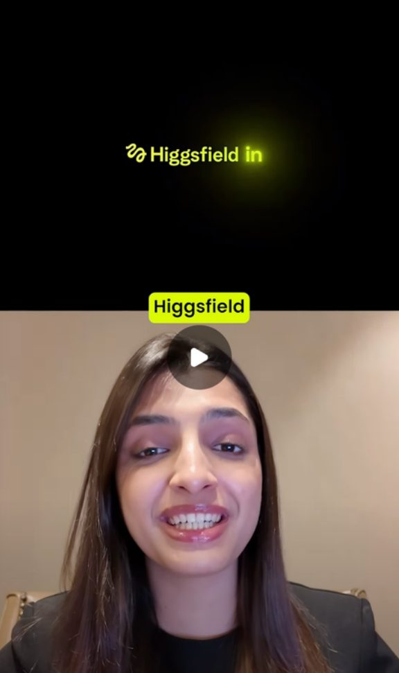
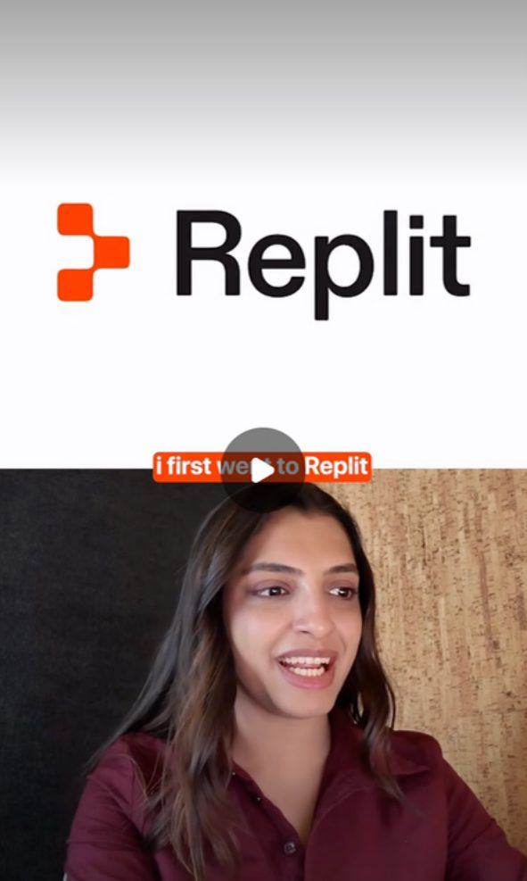
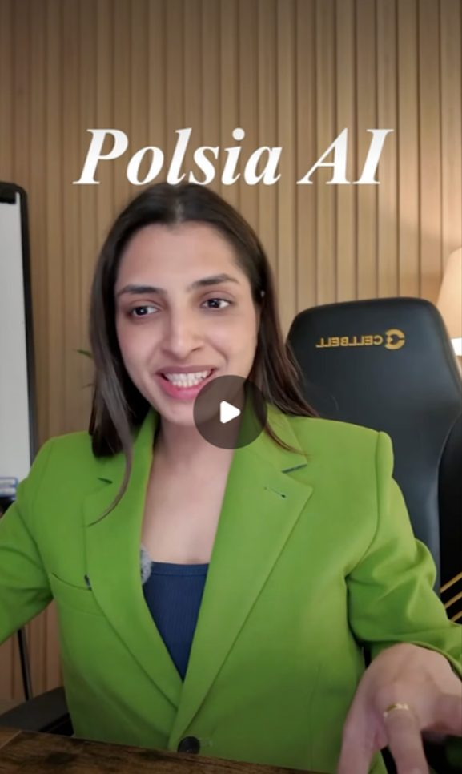
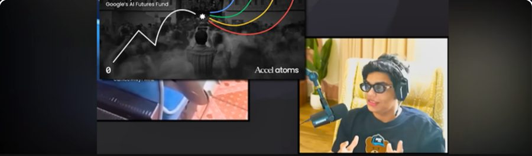
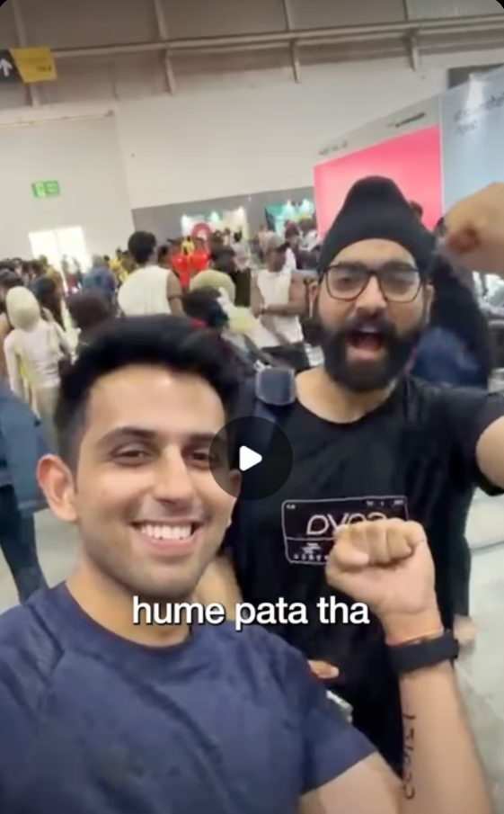
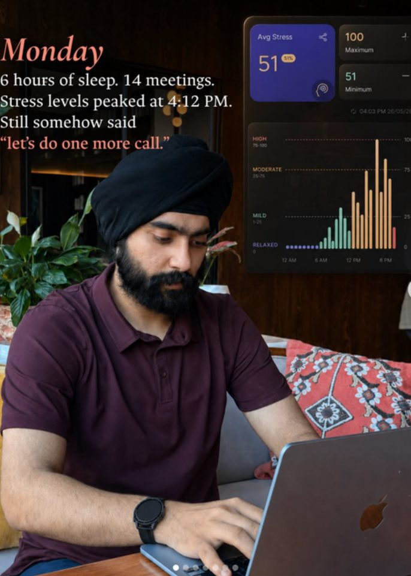
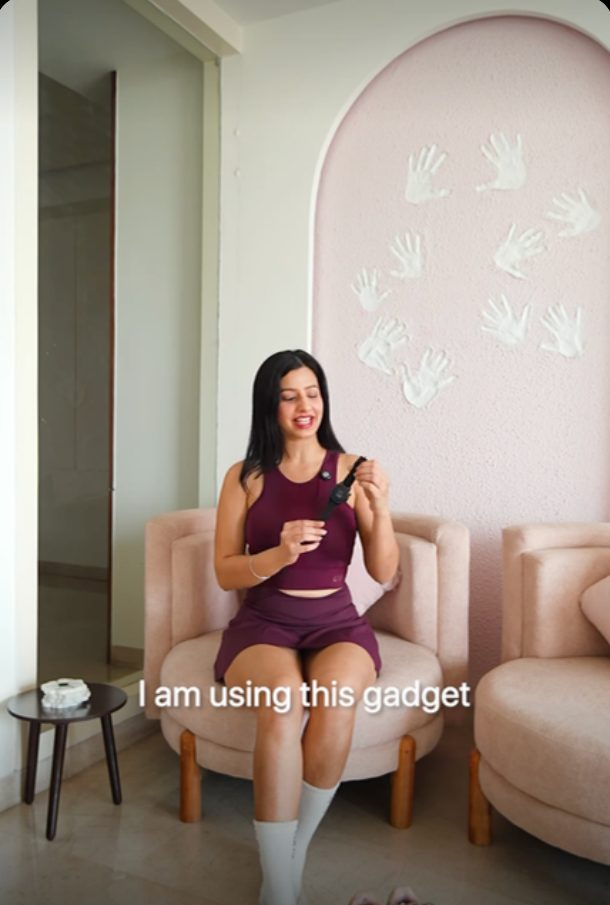
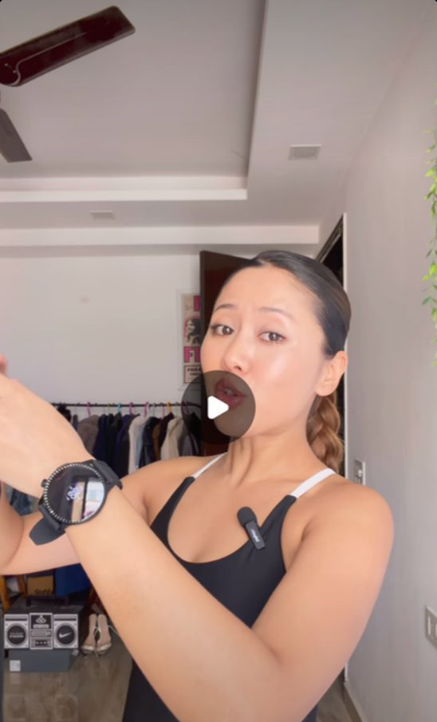

Spread the word on social.
Coordinated waves across X, LinkedIn, YouTube and Instagram, so launch day looks like the whole internet noticed at once.
AI & tech launches · an Owled brand
Snoball helps AI companies launch, scale and build trust, starting on X and rolling out to every feed your buyers scroll.
Clients
Across AI, fintech, consumer and media, from seed stage to household names.
Core belief
Not where a media plan says they should. Every launch begins on X, then rolls outward, gathering mass with each channel it touches.
The model
The playbook
Coordinated waves across X, LinkedIn, YouTube and Instagram, so launch day looks like the whole internet noticed at once.
Operators, builders and VCs, reached through the communities, newsletters and niche channels they actually trust.
Launch videos made in Owled’s own studios that explain what you built in the first few seconds.
Distribution
Creators across LinkedIn, YouTube and Instagram who already hold your buyers’ attention.
Private groups of AI operators, builders and VCs, where opinions form before they go public.
Native, credible presence in the threads where technical users compare tools.
Founder profiles and company pages that build credibility with decision-makers.
Deep-dive formats on the channels your users actually subscribe to.
Placements inside the inboxes the AI crowd reads every morning.
Made in Owled’s own studios by the people who run the rest of the campaign. Story, edit and distribution in one room.
Past work · AI launches
Creator-led reels that explain the product in the first three seconds, then let someone the audience trusts deliver the verdict.



Case studies

An Accel Atoms pitch placed inside a comedy review video on a 5.28M-subscriber channel, with a pinned “apply here” link in the comments.
Positioned Zepto as the fastest way to find and buy gifts in 10 minutes, through creators.
Creator-led content, print amplification and platform-specific campaigns across car insurance, health insurance and LinkedIn.
Positioned boAt’s Valour watch as a wellness-first, high-performance lifestyle product.




Told the story of what the brand stands for, from sustainability to labour welfare and DEI.
Four videos built for virality on Instagram from the ground up.
How it sounds
Written for the reader’s problem, not the product’s feature list.
Every post, script and caption sounds like it came from you.
One sharp idea about why you matter, repeated until it sticks.
The same story, re-cut for each channel and audience as the launch grows.
Momentum, measured
Figures for Owled, Snoball’s parent company.
Part of Owled
Owled helps AI and tech companies launch, working mostly with Series A/B+ teams. Snoball brings that machine to the companies, creators and thought leaders shaping AI.
Your turn
Tell us what you’re launching. We’ll show you where the conversation starts.
Plan your launch